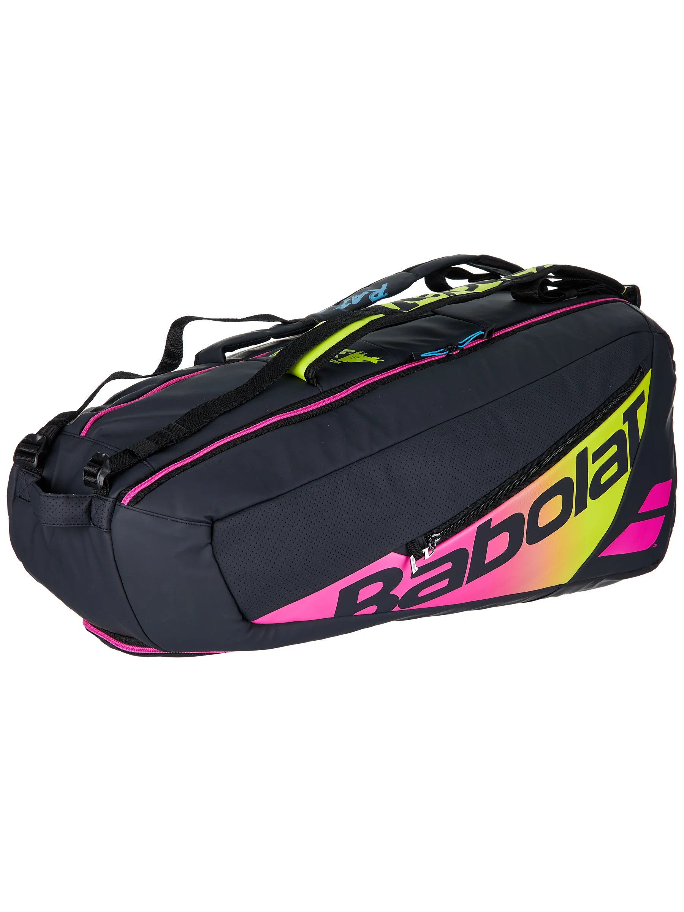

The Babolat Pure Aero Rafa 6 Pack Tennis Bag is made from premium materials, fully insulated, and waterproof, ensuring your gear stays in top condition. This bag is designed to carry up to 6 racquets in its two main compartments and includes a vented shoe tunnel, allowing you to bring your favorite pair of shoes. With additional accessory pockets on both sides, you can keep your essentials organized. Babolat's commitment to reducing waste is evident in the bag's undyed interior. The ergonomic, padded, and adjustable shoulder straps make carrying this bag a breeze, no matter how full you pack it. Available in Black, Pink, Orange, and Yellow.
